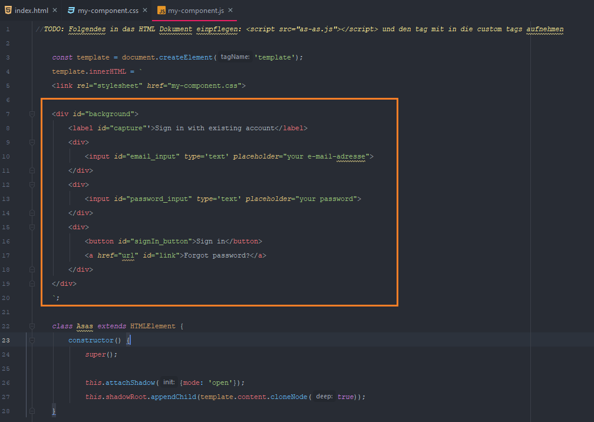
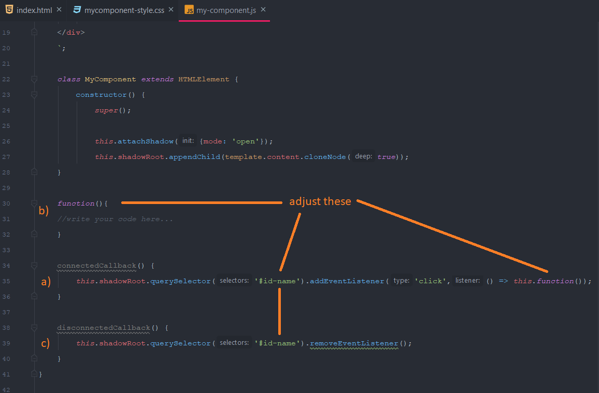

Handle the JS File¶
In the jf file you will finde:
1. The HTML structur of your component
Here you can make changes that will effect the construction and the order of the elements.
Unfortunatelly you have to format the HTML structur by hand.
Otherwise the indentations aren’t correct.
(That would not effect the functionallity, but it’s easier to read and simlpy looks nicer)

HTML structur in the js file.¶
2. The component class
Below the html-template you will find the component class, where you can add eventlistener to your buttons or other elements you want to interact with.
call the choosen element by the ID-name and add an eventlistener in the provided connectedCallback-function:
connectedCallback() { this.shadowRoot.querySelector('#id-name').addEventListener('click',() => this.function()); }
define your function you called in den lambda-expression:
function() { // write your code here... }
remove the eventlistener in the disconnectedCallback-function.
disconnectedCallback() { this.shadowRoot.querySelector('#id-name').removeEventListener(); }

explaination how to add events.¶
Hint
In the exported js-file you already will finde this code.
You only have to replace the id-name and the function name.
You can easily call multiple element in the connectedCallback() function.
Just make sure you name the used functions in the evenlistener differently.